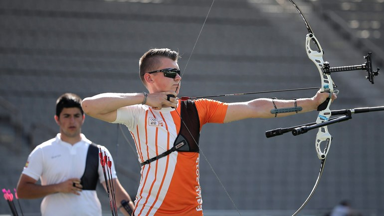
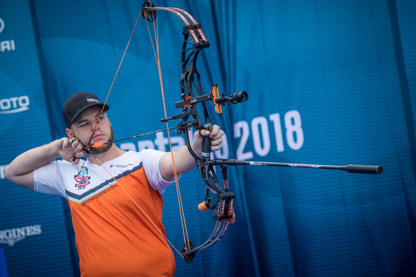
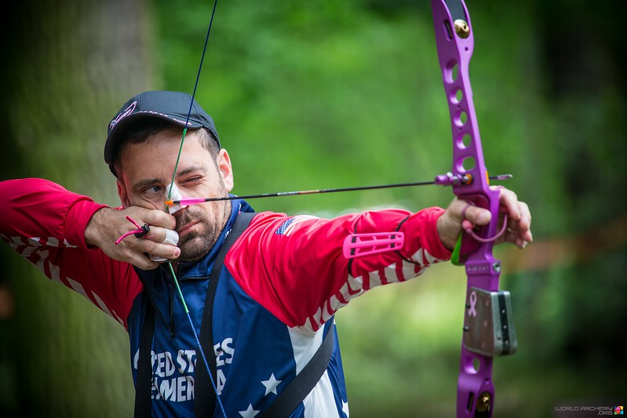

Je hebt een aantal verschillende bogen namelijk de recurve boog, compound boog, barebow en je hebt nog houten bogen. Iedereen begint altijd met een beginnersboog dat is een recurve boog met een houten middenstuk en latten. Daarna kan je kiezen of je met een echte recurve boog of andere boog wilt schieten.
Recurve boog

De meest voorkomende boog is de recurve boog. De recurve boog is een boog met een los middenstuk waar je twee losse latten in schuift. Ook heeft de boog een vizier om op het blazoen te richten en stabilisatoren om meer in balans te kunnen staan. Het schieten met een recurve boog is een olympische sport.
Compound boog

Een compoundboog ziet er heel anders uit dan de andere bogen, hij heeft namelijk cams(katrollen). Dit zorgt ervoor dat je met minder inspanning zwaarder kunt schieten en dat betekent dat je pijl met een hogere snelheid wegschiet. Een compound boog heeft ook een vizier en stabilisatoren, maar ook een peepsight en een release wat er voor zorgt dat je nauwkeuriger kan schieten. Het schieten met een compound boog is geen olympische sport, maar ze zijn er mee bezig om dat te veranderen.
Barebow

Een barebow is eigenlijk een recurve boog, maar dan zonder hulpmiddelen zoals een vizier. Dus om goed te kunnen mikken kijken ze langs de punt van hun pijl en zetten ze hun hand op verschillende punten op de pees.